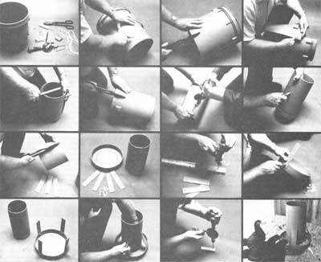
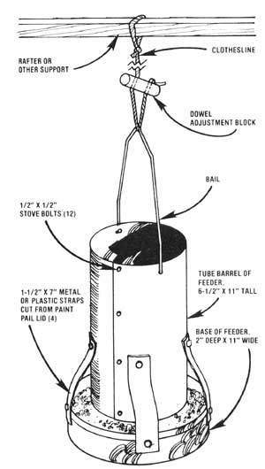

The trough poultry feeders sold in hardware and feed and seed stores are expensive. They're also wasteful: They collect droppings, and birds can-and do-scratch both homegrown grain and store-bought mash out of the best of 'em.
Winston-Salem, North Carolina's Eric E. Wiggin doesn't think today's homesteaders and raisers of backyard flocks of chickens should put up with that situation. Not when it's so easy to recycle a few free and/or scrounged-up materials into hanging poultry feeders that [1] do not collect droppings and [2] do not waste feed.
"I make my birds' feeders out of metal or heavy plastic five-gallon paint or food pails," says Mr. Wiggin. "The containers can be picked up free from painting contractors, restaurants, bakeries, and other commercial food operations in almost any part of the country. You'll need one of the buckets for each feeder you want to build ... plus twelve 1/8" X 1/2" stove bolts, a few feet of clothesline, and a 1"X5" dowel whittled from scrap wood."
MOTHER's Emerson Smyers recently followed Eric's directions for fabricating one of the feeders. First he thoroughly cleaned?and removed the bail and lid from -a plastic five-gallon paint bucket that was just taking up space in our research shop.
Then he measured two inches up from the bucket's bottom and made a clean cut all the way around the container's base. The bottom-complete with two-inch "rim"?was then set aside to serve as the base of the finished feeder.
Next, the "tube" which was left was slit all the way up the side. The edges of the tube were then overlapped, the overlap was trimmed off, and the remaining tube was drilled and bolted in four places to form a 6-1/2"-diameter cylinder. This cylinder would become the feeder's barrel.
Hey! This project was obviously going to be a snap. So Emerson moved right on to cut four 1-1/2" X 7" straps from the pail's lid. He also drilled 5/32" holes through each end of each strap (centered, and 3/4" in from the ends) and fastened them to the base with 1/8" stove bolts as shown.
Two 3/4"-thick blocks of wood were then placed in the bottom of the base to act as spacers, the barrel was centered on them, the straps were bent over against the barrel, and it was marked for drilling, After that, the straps were bolted to the barrel and the blocks were removed.
It didn't bother Emerson when he saw his feeder's bolted-on barrel settle somewhat into its base when the spacer blocks were taken out. He knew that later-when he'd filled the feeder and hung it up in the chicken. House?the base would "float" far enough beneath the hopper for mash or pellets to gravity-feed down and out to its rim where the poultry could get it.
The feeder was almost finished. Emerson had only to drill new holes near its top for reinstallation of the original bail (this was necessary because, after the pail's sides were overlapped to form a smaller barrel, its old bail holes were no longer directly opposite each other). The bail was then bent to fit, put in place, and its ends were crimped so it couldn't come off.
Finally, two holes (each just large enough for a clothesline to barely slip through) were drilled (1/2" in from each end) in a 1"-diameter, 4"-long piece of wood. Emerson cut the rope about two feet longer than it needed to be to reach from a rafter in his backyard chickenhouse to the feeder's bail, when the new unit was placed on the building's floor. Then he assembled the rope, bail, and adjustment block as shown until the feeder was suspended just high enough off the floor for his chickens to eat from It easily ... but not scratch out or mess in its contents. (The weight of the feeder kept the block from slipping.)
After that it was easy-as the birds grew, litter plied up in the house, the building was cleaned, etc.?to raise or lower the feeder from time to time so that the chickens always had to reach up a little to eat out of it.
Final verdict? Eric E. Wiggin's no-cost, no-waste poultry feeder design works so well ... that Emerson has now built a second one! And he says that he wouldn't be without both his Wiggin feeders today! There ain't no better testimonial than that.
|
 |
 |
|